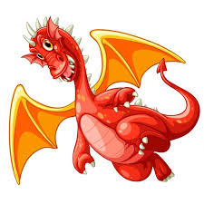

Драко́н (греч. δράκων) — собирательное название, объединяющее ряд мифологических и фантастических существ. Дракон связан с христианским культом святого Георгия и получил широкое распространение в европейском религиозном искусстве. Традиции Восточной Азии также содержат немало драконообразных персонажей, таких как японский рю (竜), китайский лун (龍), вьетнамский лонг (龍), корейский ён (용) и др.